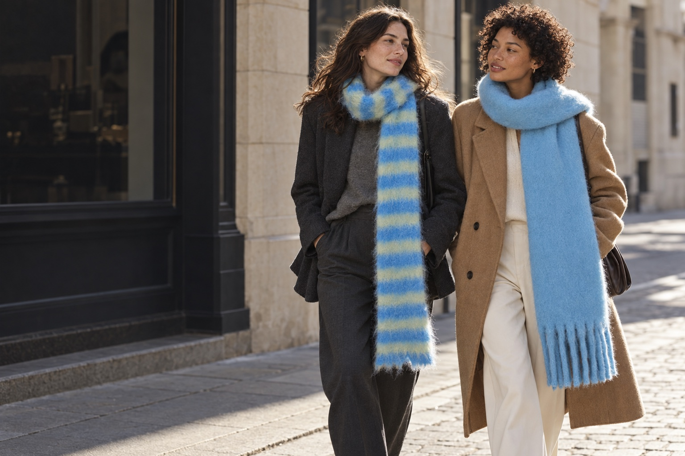

A little knit. A lot of personality.
Good company,
wherever you go.
Three ways to make it yours.


 The colour study · No. 01
The colour study · No. 01Meet your mood-lifter
Turn up
the blue.
Sky blue. Fresh green.
A good day starts with a stripe.